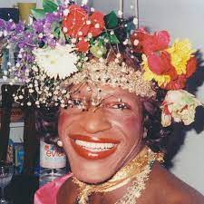
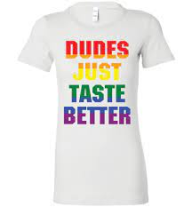

Pride Month has a deep and rich history. This widely-celebrated month features parades, marches, and an abundance of rainbow flags and designs. People in the LGBTQ+ community are encouraged to embrace themselves and express their identities proudly throughout the month of June, as they are often made to feel like they have to hide who they are during the rest of the year.
However, Pride did not start off quite so happily. In June of 1969, a police raid took place at Stonewall Inn, a place where many members of the LGBTQ+ community would meet up to safely express themselves in a time when they didn’t have the opportunity to do so in public. Many raids like this happened during this time, but it was this raid that led to the Stonewall Riots. People were sick of being oppressed and attacked, so they fought back.
The Stonewall Riots were a major turning point in history. They were led by primarily people of color, especially trans women of color. Marsha P. Johnson, a black trans woman, led the riots. She, as well as those who stood beside her, is the reason that Pride Month can be celebrated today. If it weren’t for Stonewall, LGBTQ+ people would likely not have the rights they have in the United States. There is still a long way to go, and there are still many places where queer individuals are not able to safely be themselves, but it is important to remember the work that people have put in to get us to where we are today.
| Name | Year of Birth | Year of Death |
|---|---|---|
| Marsha P Johnson | 1945 | 1992 |
| Raymond Castro | 1941 | 2010 |
| Danny Garvin | 1949 | 2014 |
| Jerry Hoose | 1945 | 2015 |

Have you gone shopping during the month of June, only to be confronted with aggressive amounts of rainbow-patterned merchandise? Welcome to the current state of Pride Month, from the eyes of corporations. As soon as June first hits, everything is rainbow-themed, companies are flying pride flags, and all anyone can talk about is gay pride (whether they support it or are against it).
While the support from big-name companies is appreciated, it often does more harm than good. Not only do these companies only discuss LGBTQ+ issues during Pride Month, but many of them clearly show that they don’t care about the needs of these people at all. Instead, they use the rainbow flags and supportive phrases to earn money, leaving the people who actually need support in the dust.
Don’t believe me? Take a close look at any major brand’s pride merchandise. It’s often over-the-top, cringe-worthy, and clearly meant to draw attention to their contribution rather than to the issues at hand. These companies claim to care deeply about LGBTQ+ people, yet they support politicians and laws which directly harm the community. Not to mention that their merchandise is clearly not designed with queer people in mind.
In fact, it’s doubtful that any queer input was considered during the making of the products sold for Pride Month. Many LGBTQ+ people online have pointed out that the pride merchandise they’ve seen has been so far removed from the community that it makes them regret being part of it in the first place. Queer artists will make designs with more class, style, and subtlety within a few days of seeing what the largest corporations in the world have released, and they gain widespread online support for it. Clearly, the community wants something different from what’s being offered.
So, a word of advice to any companies who may be listening: reflect on what you’re doing and why you’re doing it. If your main goal is profit, then we don’t need your contributions.
